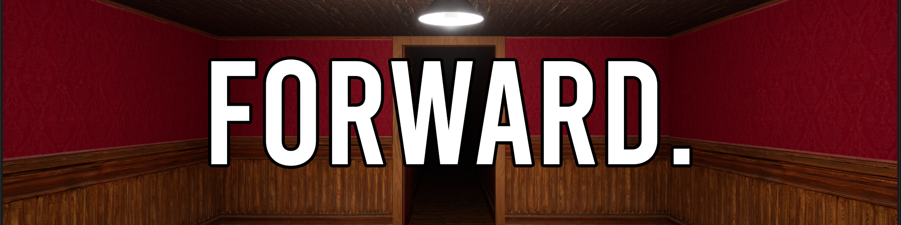

FORWARD.
Là aussi, le principe est simple : aller tout droit, tout simplement, sans possibilité de revenir en arrière
Je suis très fier d'avoir pu réaliser ce que j'imaginais à la base.
Fait encore une fois en Blueprint avec Unreal Engine 5.3.2
Trouvable sur Itch.io et sur Gamejolt et le teaser sur YouTube
Comme il n'est lié à aucun GameJam, il est resté plutôt inaperçu